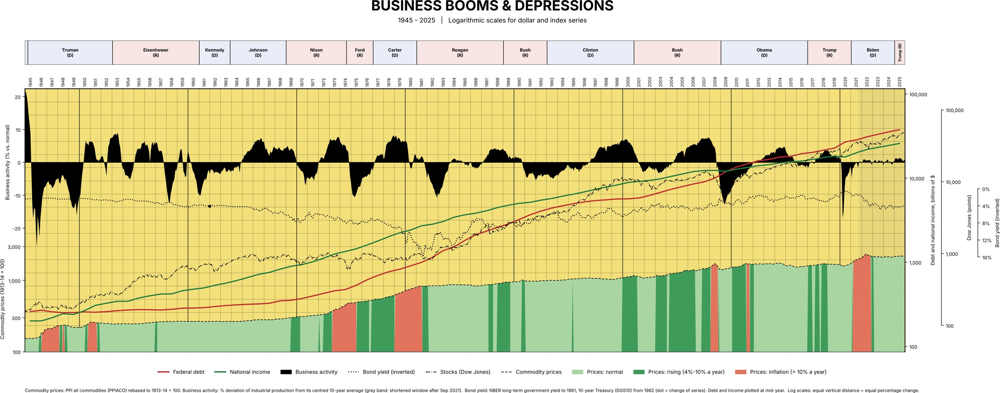
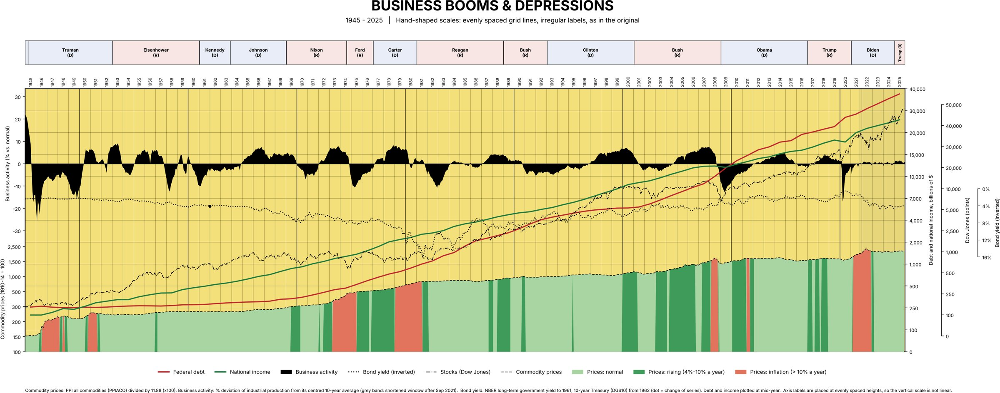
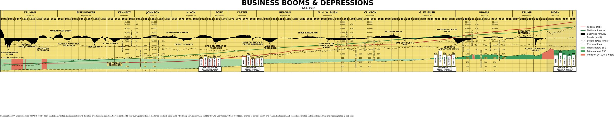
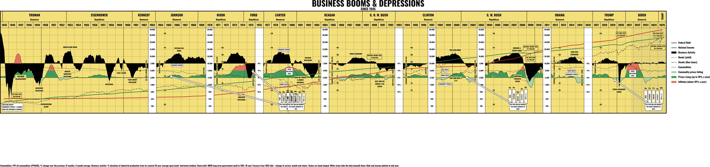
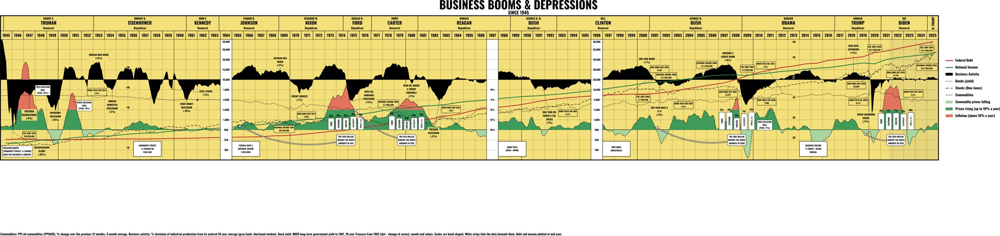
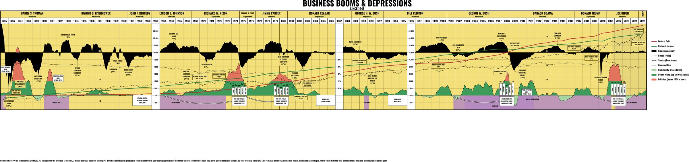
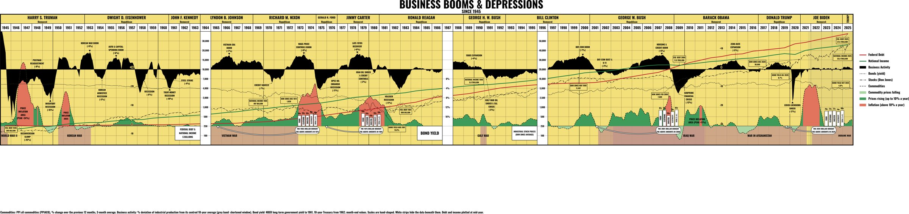

By the numbers
years covered, 1945 to 2025, continuing a chart that began in 1775
versions of the chart shown and revised, from the first log-scale draft to the print
test renders in the last week alone, to check that every label fit
values plotted on the chart, from about 10,000 numbers in the workbook
lines of Python in the final script
labels placed by the program so that none covers another: 24 booms and recessions, 28 values, 7 wars
cost-of-living pillars in four sets, from the 1965 dollar to the 2019 dollar
words exchanged in the conversation, counting only the last week
The conversation ran over several sessions, and only the last one (12–19 November 2026) could be counted exactly; the word and render counts are for that session, so the true totals are higher.
How it was made
- Reading the original. Photographs of the 1944 chart were studied up close: how its commodity areas were coloured, how its scales were hand-drawn to fit the grid, how its labels and pillars were laid out.
- Collecting the data. Monthly and annual series were gathered from FRED, the NBER and the Bureau of Labor Statistics into one Excel workbook, and every column was checked. That check found and fixed several problems, including three CPI columns whose headers did not match their data.
- Rebuilding the method. Business volume, for example, is not in any public table: it was rebuilt as the gap between industrial production and its own ten-year average, close to the way the original measured a deviation from "normal".
- Drawing it in code. Instead of a charting tool, a Python script draws every line, area, scale and label, so the chart can be redrawn exactly from the workbook at any size.
- Revising, version after version. Each change was asked for in plain words — "the axis labels should come out from the left", "the dashes are connecting" — then drawn, checked close up and adjusted.
The chart as it developed
First draft: logarithmic scales

Scales shaped by hand

The original's layout

Inflation as a yearly change

One scale per line

Wars and pillars

Close-up details

The print

What is on the chart
| On the chart | What it shows | Source |
|---|---|---|
| Black area | Business volume: industrial production above or below its 10-year average | Federal Reserve (INDPRO) |
| Dashed line, green and red areas | Commodity prices: % change over 12 months; red above 10% | BLS (PPIACO) |
| Red line | Federal debt | U.S. Treasury |
| Green line | National income | Bureau of Economic Analysis |
| Chain line | Dow Jones Industrial Average | S&P Dow Jones Indices |
| Dotted line | Long-term government bond yield (high yields plot low) | NBER; Federal Reserve (DGS10) |
| White pillars | What a base-year dollar bought at the end of each inflation | BLS consumer price indexes |